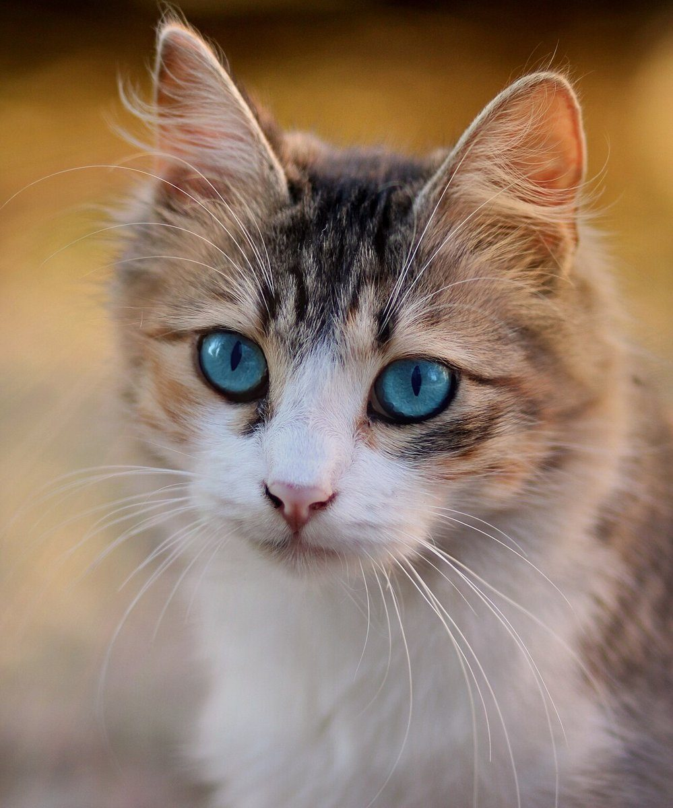
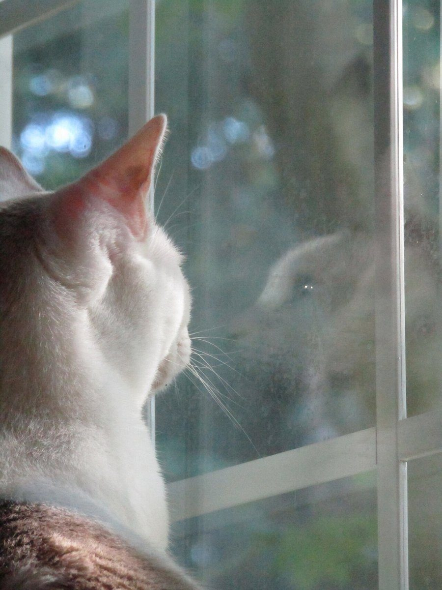

カフェ / 愛知県知多市
extracafe幸福のしっぽ
愛知県知多市のカフェ「extracafe幸福のしっぽ」のご案内ページです。営業時間やメニューなど、詳しいことは準備中。電話は 0562-38-7180、まずはInstagramをのぞいてみてください。

制作側の連想
「しっぽ」から、列の最後尾へ
屋号の由来は分かりません。制作側は「しっぽ」という言葉から、いちばん後ろ、行列の「最後尾」の札を連想しました。そこでこのサイトは、先頭から最後尾へ向かって細くなる列の作りにしています。お店の理念・由来とは無関係な、制作側の連想です。
先頭 → 最後尾
だんだん細くなる、五枚の列。
写真はお店や知多市のものではありません。国外・撮影地不明のフリー素材を、列のイメージで並べています。
- 先頭

撮影地不明のイメージ - 2

撮影地不明のイメージ - 3

国外のイメージ(コロンビア) - 4

撮影地不明のイメージ - 最後尾
ご案内
お店のこと(確認できたものだけ)
| 所在地 | 〒478-0001 愛知県知多市八幡蔵池６２−１ |
|---|---|
| 電話 | 0562-38-7180 |
| 営業時間 | 準備中 |
| 定休日 | 準備中 |
| ご予約 | 準備中 |
| 駐車場 | 準備中 |
| SNS | Instagram @extracafe_777 |